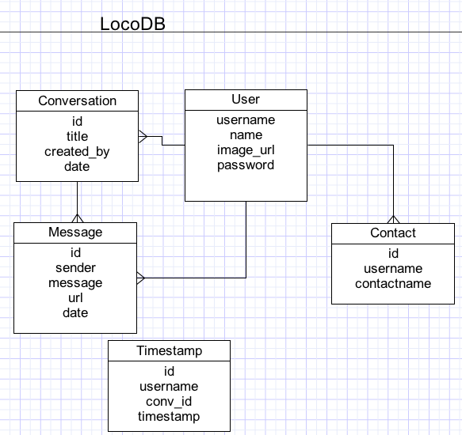
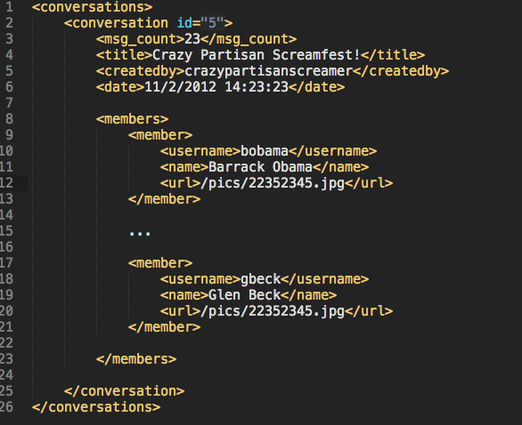
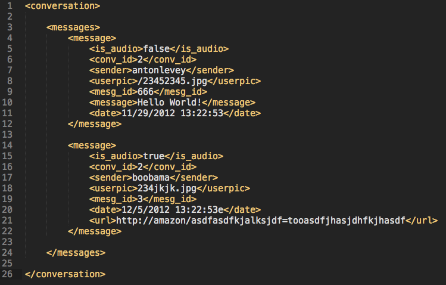
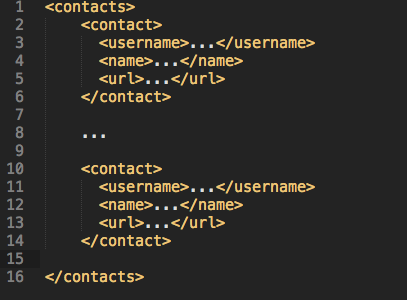

LOCOSERVER
Vocoloco HTTP Server
Overview
Locoserver is the server component of the Vocoloco mobile application. It provides a RESTFUL API for adding, creating, and deleting conversations and messages. It works on the principal of receiving structured XML from the client and responds with structured XML or different codes.
Like most Scala apps you use SBT, which is a build tool like Maven or Ant to Compile and handle dependencies.
Architecture
The application is hosted on Heroku. The DB is hosted on Amazon WS as well as the file server which user Amazon S3
Server
Locoserver was coded in Scala using the Play! framework which follows the MVC pattern

Database
Locoserver uses a Postgresql relational database hosted on amazon
Web Api
POST /login
Authenticate and create user session.
Payload
Standard HTTP webform of type Application/x-wwwform-urlencoded
with fields username and password
Response
200
403
404
GET /logout
Destory authenticated user session.
Payload
None
Response
200
GET /conversations
Returns an XML representation of all conversations an authenticated user belongs to.
Payload
None
Response
None
GET /conversation/:id
Returns an XML representation of all messages in the conversation to an authenticated user that belongs the conversation.
Payload
test
Response
test
POST /conversation
Create a new conversation with title and contacts that will be involved.
Payload
<message>I am the message</message>
Response
test
POST /conversation/respondtext/:id
Add text based message to a conversation that a user is a member of.
Payload
<conversation><title>I am the title</title><contacts>user1</contact> <contact>user2</contact> <contact>... </contact> </contacts> </conversation>
Response
200 and return the new ID of the conversation
403
404
POST /conversation/respondaudio/:id
Add audio based message to a conversation that a user is a member of.
Payload
In development
Response
In development
GET /conversation/delete/:id
Removes a conversation from only the user that made this call.
Payload
None
Response
200
403
404
GET /contacts
Returns an XML representation of all contacts that belong to the authenticated user
Payload
None
Response
200
403
404